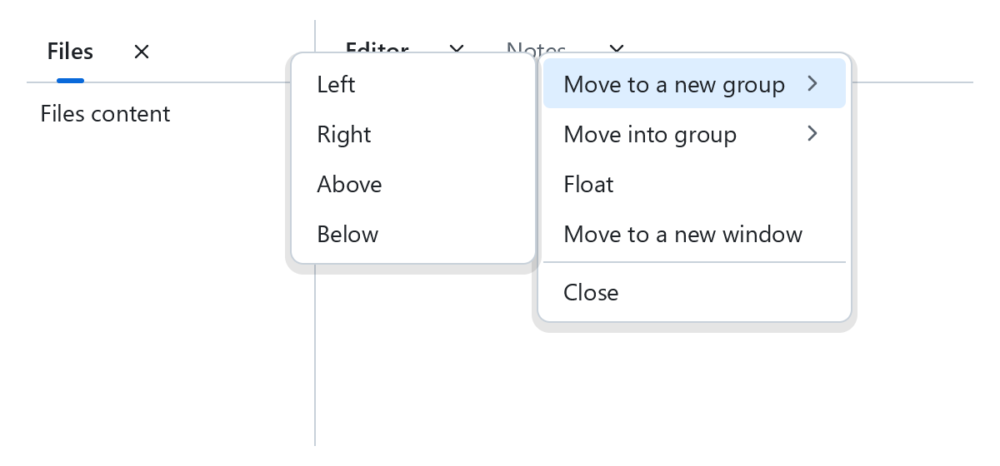
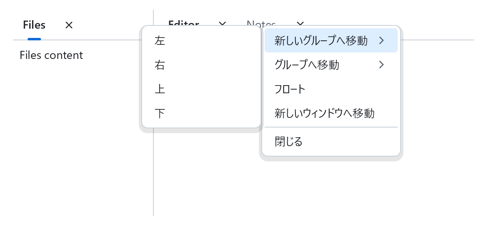
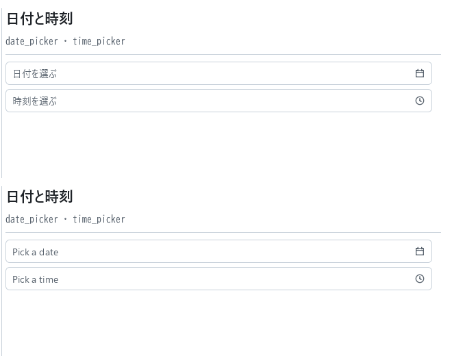
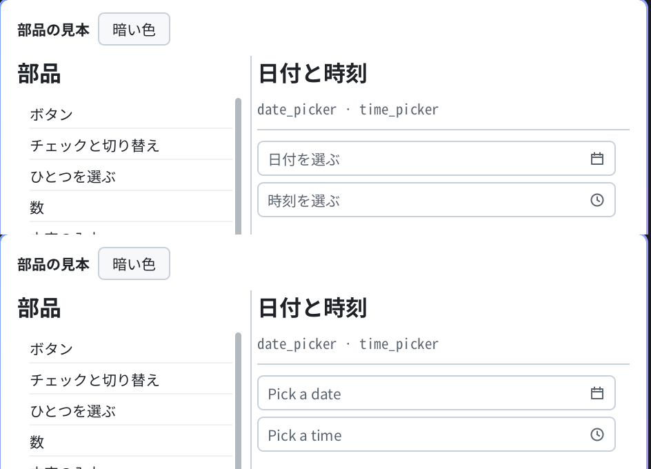

kargui 開発レポート ・ 第 20 章
多言語（kargui が出す文字）
アプリの仕組みの最後として、多言語の 1 段目を作りました。題の帯のボタン、ドッキングのメニュー、日付の選択の文字など、kargui が自分で出す文字を、OS の言語に合わせて英語か日本語にします。この章では、範囲の決め方、OS ごとの言語の読み方、試験を PC の言語に左右させない工夫、読み上げの木に出ない名前の確かめ方を紹介します。最後に、0.4.0 を crates.io に出した話も書きます。
この章で分かること
- フレームワークが自分で出す文字の集め方
- Windows と Linux で、OS の言語を読む方法
- OS の設定を読む処理を、試験できる形に分ける方法
- 読み上げの木に出ない名前を、どこで確かめるか
- crates.io に出していない版があった時の、版の番号の決め方
範囲を決めた
ハイコントラストを作った夜に、多言語の案を 3 段に分けて作者に出していました。作者が選んだのは 1 段目です。
| 段 | 中身 | 今回 |
|---|---|---|
| 1 段目 | kargui が自分で出す文字を、OS の言語で英語か日本語にする | 作った |
| 2 段目 | アプリ自身の文字の訳し方を、ガイドで紹介する（kargui に仕組みは入れない） | まだ。今の言語を読む ui.locale() だけ先に足した |
| 3 段目 | 右から左に書く言語（並べ方の左右の反転、文字の並べ替え） | 使う人が出てから |
kargui が出していた文字
部品のコードの中の英語の文字を探すと、利用者に見える物と、読み上げソフトに伝える名前が、合わせて 18 語ありました。日付と色の選択は、英語と日本語の組（DateText・ColorText）をアプリが選ぶ形が、前からありました。日本語の言葉は、日本語の Windows と同じ言葉にそろえました。題の帯のボタンは、Windows の吹き出しと同じです。
| 場所 | 英語 | 日本語 |
|---|---|---|
| 題の帯のボタン | Minimize・Maximize・Restore・Close | 最小化・最大化・元に戻す (縮小)・閉じる |
| 数の入力欄のボタン | Increase・Decrease | 増やす・減らす |
| つまみ | Resize・Resize column | 大きさを変える・列の幅を変える |
| ツールバー | More options | その他のオプション |
| ドッキングのメニュー | Dock・Float・Move to a new group・Move into group・Move to a new window | ドッキング・フロート・新しいグループへ移動・グループへ移動・新しいウィンドウへ移動 |
| メニューの向き | Left・Right・Above・Below | 左・右・上・下 |
パネルの閉じるボタンの名前は、言葉の順が言語で変わります（Close Editor ／ Editor を閉じる）。そこで、パネルの名前を受け取って文を作る関数を、表に持たせました。


書き方
何も書かなければ、OS の言語に従います。アプリが決めたい時は Options::locale を使います。アプリ自身の文字は、ui.locale() を見て同じ言語で出せます。
let mut options = Options::new("Notes");
options.locale = Some(Locale::Japanese); // None（既定）は OS に従う
let save = match ui.locale() {
Locale::Japanese => "保存",
_ => "Save",
};Locale は、後から言語を足しても、使う側のコードが組み立てられなくならない形（#[non_exhaustive]）にしました。match には、最後に _ の腕が要ります。
OS の言語の読み方
| 項目 | Windows | Linux（と macOS） |
|---|---|---|
| 読む物 | 表示の言語（GetUserDefaultUILanguage） | 環境変数 LANGUAGE・LC_ALL・LC_MESSAGES・LANG |
| 言語の決め方 | 言語の番号の下の 10 ビットが 0x11 なら日本語 | LANGUAGE の並びから kargui が持つ最初の言語、無ければ LC_ALL・LC_MESSAGES・LANG の空でない最初の物 |
| 持たない言語 | 英語 | 英語（C と POSIX も英語） |
| 読む時 | 起動の時に 1 回。動かしたまま変えても、次の起動まで変わらない | 起動の時に 1 回。動かしたまま変えても、次の起動まで変わらない |
Windows の言語を読む関数は、windows クレートでは、まだ使っていない機能の切り替え（Win32_Globalization）の中にあります。この機能は大きく、組み立てる物が増えるので、関数 1 つだけを自分で宣言しました（第 18 章のハイコントラストの構造体と同じ考え方です）。
Linux の決め方は、環境変数を読む関数を引数で受け取る形にしました。試験では、本物の環境変数の代わりに表を渡して、「LC_ALL は LC_MESSAGES より先」「LANGUAGE は並びの中から持っている言語を探す」などを 8 通り確かめています。Windows の言語の番号から決める所も、番号を受け取る関数に分けたので、Linux の上でも試験が走ります。
試験を PC の言語に左右させない
試験台が OS の言語を読むと、同じ試験が、日本語の PC では落ち、CI（英語）では通ることになります。今までの試験には、h.find("Minimize") のように英語の名前で部品を探す物がたくさんあります。そこで、言語は窓の処理が窓を作る時に入れることにし、試験台はいつも英語から始めます。日本語で確かめる試験は、h.set_locale(Locale::Japanese) で変えてから、「増やす」「最小化」「新しいグループへ移動」を名前で押します。
日付と色の選択
日付・時刻・色の選択の文字は、窓を作る時に、その言語の組（DateText・ColorText）になります。アプリが ui.set_date_text で決めた物は、その後のビューで決め直されるので、アプリの指定が勝ちます。週の始まりは、英語（米国）も日本語も日曜なので、今回の 2 つの言語では変える所がありませんでした。
確かめた

--locale en。
LANG=ja_JP.UTF-8）の同じページ。上は OS の言語のまま、下は --locale en。見本の窓だけを切り出した。| 確かめたこと | 結果 |
|---|---|
| Windows の見本 | 記録の locale の行に、OS の言語の番号（0x0411）と、選んだ言語が出た |
| 検証機の見本 | LANG=ja_JP.UTF-8 から日本語。引数で英語を選ぶと英語 |
| UI オートメーション | 日英とも落ちない。ただし、題の帯のボタンと数の入力欄のボタンは、読み上げの木に別の部品として出ない |
数の入力欄は、読み上げソフトには 1 つの部品（名前は「部数」など、アプリが付けた物）として伝わり、上下のボタンは木に別々には出ません。題の帯のボタンは、英語でも木の中に名前が見つかりませんでした。理由はまだ調べていません。そのため、これらの名前が言語で変わることは、読み上げの道具では確かめられず、試験台の試験で、日本語の名前で探して押せることを確かめています。
作者の手の確かめ
Windows は作者が 2 回開きました。検証機は、作者の「コマンドを打つのが面倒なので、アプリを立ち上げる所までやってほしい」という頼みで、私が見本を立ち上げ、画面の操作を作者がしました。
| 場所 | 記録 |
|---|---|
| Windows（OS の言語のまま） | 日本語。日付と時刻の欄を開き、ドッキングのタブのメニューを開いた |
| Windows（--locale en） | 英語。同じ操作 |
| 検証機 | 日本語。日付と時刻の欄、タブのメニュー、トレイを押した知らせ、通知の本文を押した答え（2 回） |
| 異常の数 | どれも panic 0、誤り 0（Windows は窓の処理の二重の呼び出しも 0） |
検証機の最後の「閉じる」では、見本は終わらずにトレイに隠れました。見本は、トレイを出していて「閉じるボタンでトレイに隠れる」に印がある時は隠れる作りで、印は最初から付いています。作りどおりの動きですが、手順に書いていなかったので、作者には閉じたように見えたはずです。隠れて動いていた見本は、私が終わらせました。
見本を立ち上げる前に pgrep -f gallery-kargui で動いているかを調べたら、「動いている」と出ました。命令の文字そのものに「gallery-kargui」が入っているので、ssh が動かしている sh 自身に当たったのです。ps の一覧を grep "[t]arget/release/gallery-kargui" のように角かっこ付きで絞ると、自分自身に当たりません。
0.4.0 を crates.io に出した
多言語を作る前に、作者が「先に crates.io を最新にしたい」と言いました。調べると、crates.io は 0.2.0 のままで、0.3.0 は出していませんでした。今の main には、0.3.0 の後のドッキング・題の帯・トレイ・通知・ハイコントラスト・既定のアイコンが入っています。これを「0.3.0」として出すと、CHANGELOG の 0.3.0 の中身と食い違うので、0.4.0 としました。crates.io の版の並びは 0.1.0・0.2.0・0.4.0 になり、0.3.0 を出していないことは CHANGELOG に書きました。
- 0.3 から上げる時に直す所を、差から調べて書いた（
Optionsの 3 つの欄、既定のアイコンとハイコントラストの振る舞い）。公開の関数で、消えた物や形が変わった物は無かった。 - README とガイドの 1 章に、
cargo add karguiでの入れ方を足した（前は手元の場所の形だけだった）。 - 手元で
cargo publish --dry-runを走らせ、60 個のファイル（圧縮して 452 KB）の包みだけで組み立てられることを確かめた。 - crates.io へ出す命令とタグは、作者が打った（crates.io の鍵は作者の物）。docs.rs も説明のページを組み立てた。
多言語は 0.4.0 の後なので、次の版に入ります。
数
多言語で足した試験は 8 個です（言語の計算 5、試験台 2、見本の引数 1）。公開の項目は 530 から 538 に、説明は 634 から 640 に、動く例は 447 から 450 に増えました。説明の中の動く例（doc テスト）は 735 から 746 に増えました。言語の表と読み方（locale.rs）は 340 行です。記録 ee58946 は 24 のファイルを変え、597 行を足して 38 行を消しています。
CI
記録 ee58946 は、作者の「送って」で GitHub に入り、CI は Windows・Linux・macOS で 1 回目から通りました。送る前に、CI の Windows と同じ 4 段と clippy を手元で走らせ、検証機でも試験 339 個と clippy を走らせています。
次の段階
これで、0.4 のアプリの仕組み（題の帯・トレイ・通知・ハイコントラスト・多言語）がそろいました。計画の次は、本物の Xorg のサーバーと macOS です。多言語の 2 段目（アプリ自身の文字の訳し方の紹介）は、使う人の声を聞いてから書きます。Windows で kargui が描く題の帯のボタンが、読み上げの木に見つからなかった理由も調べます。